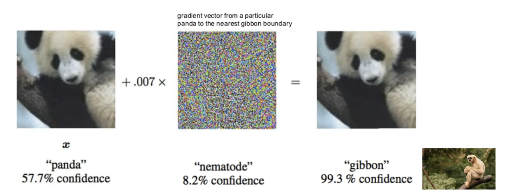

Current Trends in Deep Learning
Co-written by:Eirik Folkestad, Manu Gopinathan & Øyvind Nygard
git statusIn the last decade, the area of artificial intelligence (AI) has exploded with interesting and promising results. With major achievements in image recognition, speech recognition and highly complex games, AI continues to disrupt society. This blog post will discuss practical applications of AI, optimization and interpretability of deep learning models and reinforcement learning (RL), based on the 2018 REWORK Deep Learning Summit in Toronto. Four software engineers from Knowit had the pleasure of travelling to Canada to attend this conference, and with renowned speakers such as Geoff Hinton attending, it turned out be an insightful experience.
Practical Predictions and Applications of AI
Early AI revolved around perceiving, deciding and acting. Today, the addition of learning is also in place, but due to the non-deterministic nature of the real world, decisions cannot be made purely from the facts that are given. Further development of AI will require improvements in a variety of areas. Andrew W. Moore, Dean of the School of Computer Science at Carnegie Mellon, shared his thoughts on what he thinks will be important.
Firstly, game theory provides an improvement to the decision making capabilities of an AI model, as the most probable answer is not always the correct answer. This can be explained from his example of an AI trying to predict the whereabouts of poachers in a national park. At first, the AI performed well at predicting the location of poachers, however, after a while the poachers in the national park learned from this and went to less obvious locations. As a result of this, the AI degenerated in performance. To improve the AI, game theory was introduced. By viewing the poachers as other players in a game, the AI was able to predict where the poachers were located even though they were not necessarily located at the optimal locations.
Secondly, autonomous AI is much researched these days. This enables, e.g., smaller robots to work together to solve a larger problem, in addition self-optimizing code, which means that the efficiency of an algorithm written by a human can be improved by an AI. These are only a few of the possibilities with more autonomous AI.
As presented by Tzvi Aviv, Founder & CEO at AgriLogicAI, AI can lead to major improvements in the agriculture and food sector. In his presentation he showed that AI can be used in conjunction with geospatial data to increase productivity, profitability and sustainability in the agriculture and food sector. By using remote sensing yield performance of soy varieties, soil data, weather data and genetic data of soy varieties, AgriLogicAi created an Ensemble of Cubist model, a type of rule-based model, model which projected a 5% increase in soy yields by optimizing the selected soy variety given an area. This and other innovations to the agricultural food industry will become more and more important as we are facing a difficult time ahead with more challenging weather conditions.

Nargiz Mammadova, founder & CEO at Destin AI, talked about the use of AI in immigration. To settle down in a new country you would have to fill out many forms and be approved for citizenship through various applications. Yet, before the actual application process, you would have to navigate through the bureaucratic process of identifying and localizing these applications. This is where AI could be helpful, exemplified by the AI assistant Destin AI are currently working on, which can provide and effective interface for users to interact with. The involvement of RPA together with an AI-powered platform could potentially decrease refusal rate and repetitive admin work, in addition to boosting the efficiency and accuracy of information to the user. Furthermore, it could increase the number of applications, approval rate and the speed of the application process. Mammadova also presented the possibility of predicting the outcome of an application and identifying reasons for approval and rejection. As a result, the application reviewers can use more time on the applications that are difficult and require more time to assess.
Brendan Frey, Co-Founder, CEO at Deep Genomics and Professor at the University of Toronto, provided an insight to AI in the pharmaceutical industry. He pointed out that 65% of all people will be affected by a genetic disease over a lifetime and health budgets in most countries are extremely high. In combination with a rapidly decreasing internal rate of return for research and development in the pharmaceutical industry, the old way of discovering new drugs is broken. AI needs to be further explored in this field and, as mentioned in his paper, can most certainly help with this by aiding in finding new drugs and personalize treatment according a person’s genome. With the human genome mapped and the large amount of datasets available, training sequence models capable of discovering genes with unfavourable traits and mutations is not far from reality.
Optimization and Robustness of Deep Learning
Another big topic in the future of AI is optimization of deep learning and how to make deep neural networks more robust. A known example of how fragile neural networks can be, is this adversarial demonstration from Harvesting Adversarial Examples:
In this example the network can detect the panda in the image to the left. Now, if you alter that picture by adding a toned down image of noise with gibbon-like features, the network will classify the image as a gibbon. However, to the human eye the picture has not been altered at all.